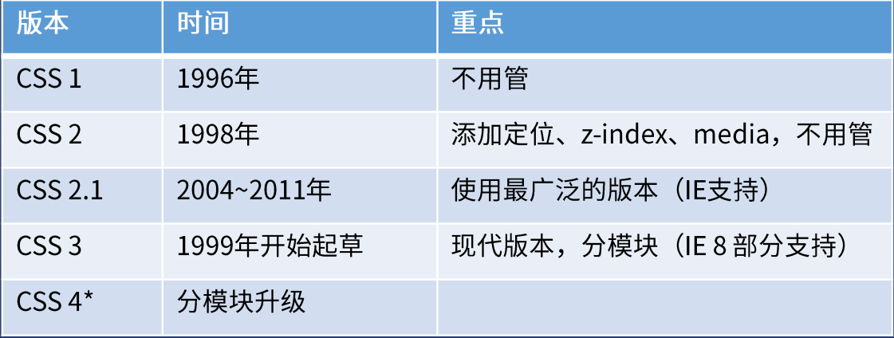
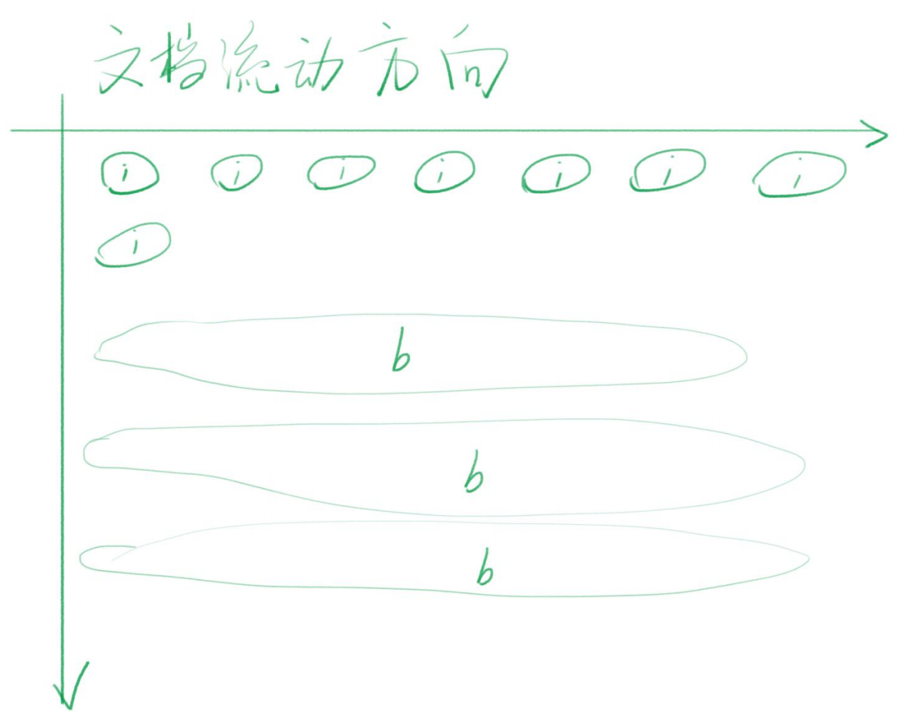
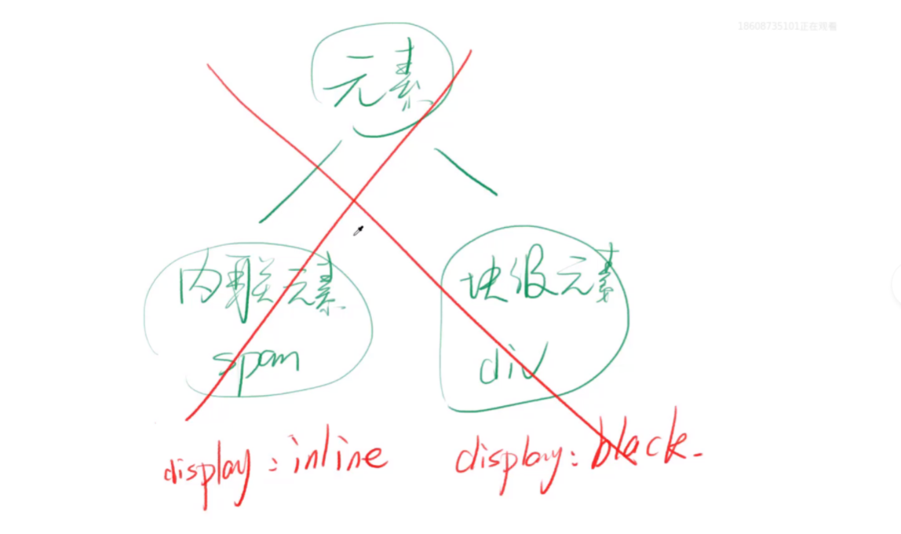
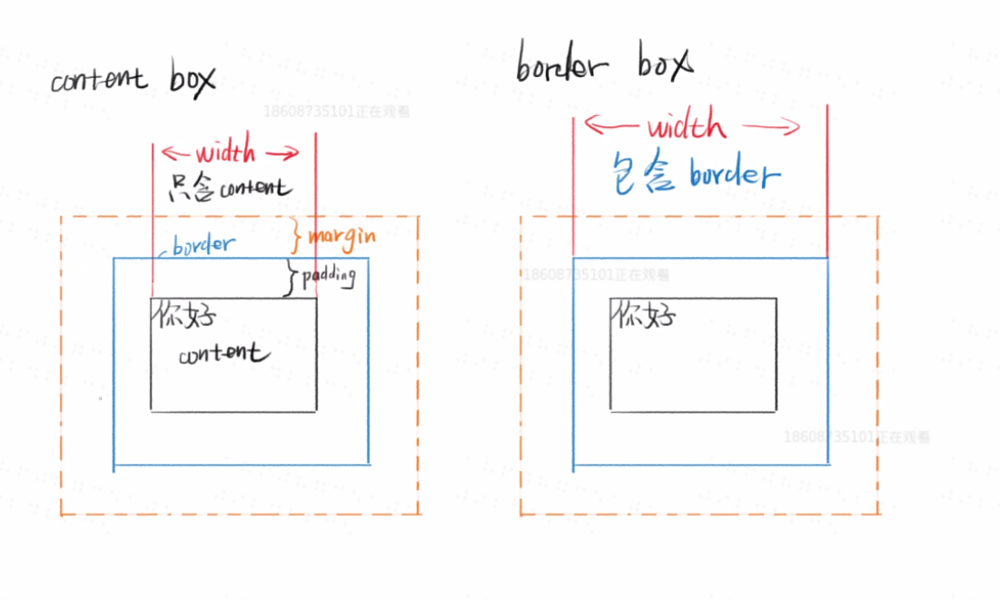

CSS基础概念
CSS的历史
层叠指的是什么
- 样式层叠
可以多次对同一选择器进行样式声明 - 选择器层叠
可以用不同选择器对同一元素进行样式声明 - 文件层叠
可以用多个文件进行层叠
CSS的历史版本

CSS语法
- 样式语法
1
2
3
4选择器{
属性名：属性值;
/*注释*/
} - @语法
1
2
3
4
5@charset "UTF-8"; //告诉浏览器用UTF-8的编码方式解析；必须放在第一行；
@import url(style.css); //从外部引入CSS样式；
@media (min-width:100px) and (max-width:200px){
样式语法
} //当设备的最小宽度为100px,最大宽度为200px时，才会执行。
如何调试
- Border调试法怀疑某个元素有问题，就给这个元素加个border，border没有出现，说明选择器错了或者语法错了，border出现了，看看边界是否符合预期。
1
border:1px solid red;
在哪查资料
- Google搜索关键词时加MDN
- CSS tricks https://css-tricks.com/
- 张鑫旭的博客
CSS文档流

- 流动方向
inline元素从左到右，达到最右才会换行block元素从上到下，每一个都另起一行inline-block元素从左到右，但是都是以块的形式存在，不会分离
元素的高度和宽度

元素不分是内联还是块级元素，可以通过display来设置元素是块级元素还是内联元素。
宽度
inline元素的宽度为内部inline元素的和，不能用宽度来指定，可以由padding来把宽度撑开。block元素默认自动计算宽度，默认是占满一行，但不是100%,但是不建议写宽度100%，可以由width来指定。inline-block元素，默认宽度是有里面的内容来决定，但是也可以由width来指定。高度
inline元素高度由line-height间接决定的，跟height无关。虽然可以通过padding来把inline元素撑开，但那不是它的高度，而是他的可视高地。block元素高度由内部文档流元素觉得，可以通过height来设定inline-block跟block类似，可以通过height来设定
overflow溢出
- 当内容的宽度和高度大于容器的时候，会溢出容器。可以通过overflow来设置是否显示滚动条。
1
2
3
4overflow:auto // 只有当文字溢出的时候，才会显示，不溢出就不会显示。
overflow:scroll // 不管是否溢出，都显示滚动条。
overflow:hidden // 直接隐藏溢出部分
overflow:visible //默认设置，会显示溢出部分
盒模型

* 盒模型有两种，一种是content盒模型/内容盒模型 ； 一种是border盒模型/边框盒模型。
content盒模型-内容就是盒子的边界。
border盒模型-边框才是盒子的边界。
- 公式
content-box width/height = 内容的宽度
border-box width/height = 内容宽度 + padding + border
margin合并
- 哪些情况会发送
margin合并
父子margin合并
兄弟元素margin合并
- 如何组织
margin合并
父子合并用padding/border挡住
父子合并用overflow:hidden挡住
父子合并用display:flex
兄弟合并用inline-block消除
基本单位
长度单位
px 像素
em 相对于自身font-size的倍数
%
整数颜色
十六进制#FF6600 或者 #F60
RGBA颜色rgb(0,0.0)或者rgba(0,0,0,1) rgba最后的1，表示透明度，1代表不透明，0代表完全透明
资源来源:饥人谷